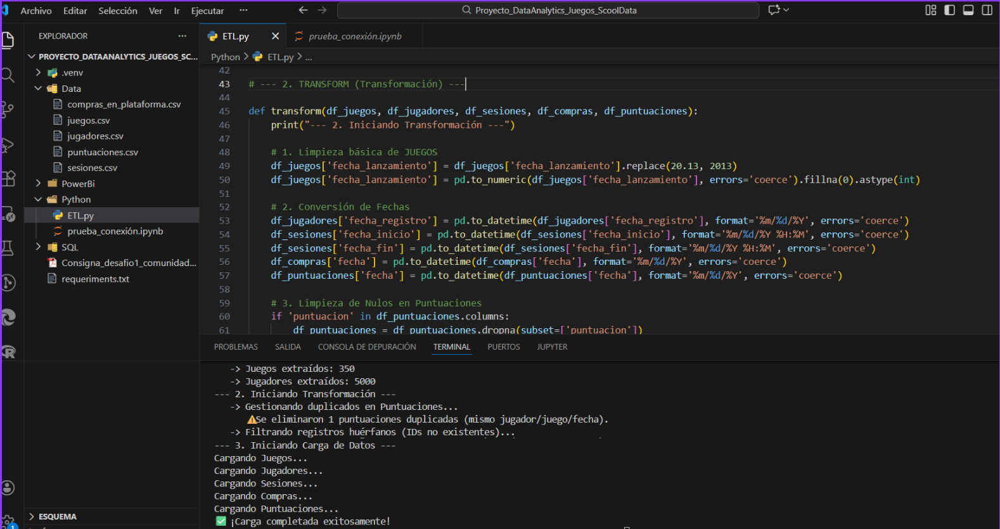

Proyecto End-to-End: ETL con Python → SQL Server
El proyecto se centra en UBI-Games, una plataforma de videojuegos en línea que utiliza registros de datos
simulados basados en títulos reales de Ubisoft. El ecosistema de datos se compone de cinco dimensiones relacionales
clave que modelan la interacción completa del usuario

La Importancia del ETL en Python (Limpieza y Tratamiento)
El documento es enfático en una condición: "Se espera que realices una etapa de limpieza y tratamiento de los datos para corregir inconsistencias", advirtiendo que este paso es clave para resultados confiables.Nuestro proceso ETL (Extract, Transform, Load) en Python fue diseñado para blindar la calidad del dato ante los errores encontrados en los archivos crudos:
1. Integridad Referencial: Se detectaron y eliminaron registros de sesiones y compras asociados a juegos o jugadores inexistentes (huérfanos), lo cual corrompería cualquier análisis de retención.
2. Lógica Temporal: Se corrigieron formatos de fecha y se unificaron tipos de datos para permitir cálculos de tiempo precisos (duración de sesiones).
3. Calidad Financiera y de Feedback: Se eliminaron transacciones con monto nulo y puntuaciones duplicadas para asegurar que los KPIs de ingresos (SUM(monto)) y satisfacción (AVG(puntuacion)) sean matemáticamente correctos.
Este flujo asegura que los datos que llegan a Power BI y SQL sean "Golden Records": limpios, consistentes y listos para la toma de decisiones ejecutiva.

Necesidad del Negocio y Objetivo
La organización busca proyecciones basadas en datos con un objetivo crítico: atraer nuevos inversores y consolidar alianzas estratégicas.El desafío principal radica en que la dirección de la empresa carece de conocimientos técnicos, por lo que se requiere transformar datos crudos en un análisis visual, claro y estratégico. No basta con mostrar tablas; se deben responder preguntas sobre el comportamiento del usuario, la rentabilidad de los juegos y la actividad en la plataforma para facilitar la toma de decisiones.
Justificación del Análisis SQL (Business Intelligence)
Basándonos en los requerimientos, las consultas SQL diseñadas no son aleatorias, sino que responden directamente a las métricas sugeridas por la gerencia:Tecnologías
| Python | Pandas |
| sqlalchemy | SQL Server |
Visión general
Este proyecto consiste en el desarrollo de una solución integral de Ingeniería de Datos End-to-End para UBI-Games, una plataforma de videojuegos simulada. Se diseñó un flujo de trabajo automatizado que ingesta datos crudos desde múltiples fuentes CSV, los procesa mediante Python para asegurar su calidad e integridad, y los centraliza en una base de datos relacional en SQL Server, transformando registros dispersos en un almacén de datos confiable listo para la toma de decisiones estratégicas de negocio.
Resultados Obtenidos